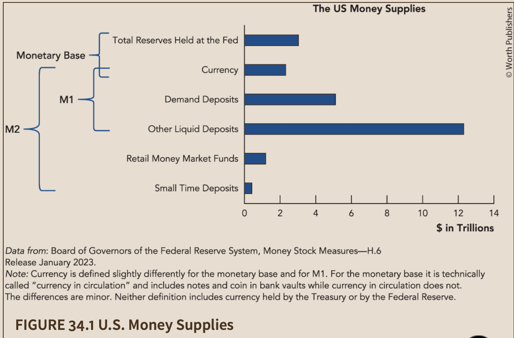

Four areas where AI helped
Participation Tracker
The Librarian
PDF → HTML (click to swap example)

Practice Apps — ECON 101H & ECON 510
Why are textbooks so expensive? We choose them—but we don’t pay for them. What we’re really buying is the ancillaries: test banks, homework platforms, auto-graded exercises. That’s the moat that locks in $300 textbooks.
AI collapses the cost of building ancillaries. With AI, a single instructor can create practice apps that offer students unlimited, algorithmically generated problems with instant feedback—something no static textbook can match.
Same intelligence. The difference is agency.